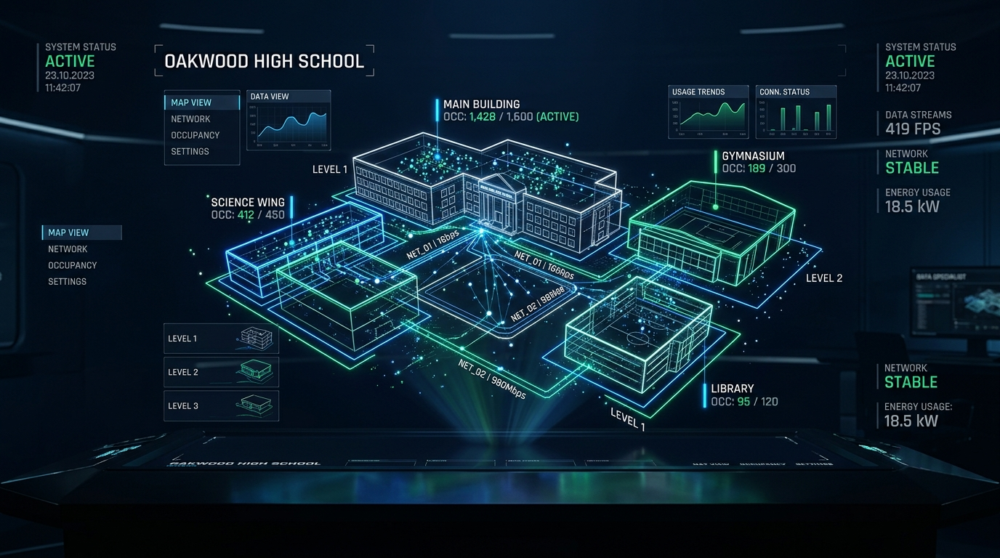
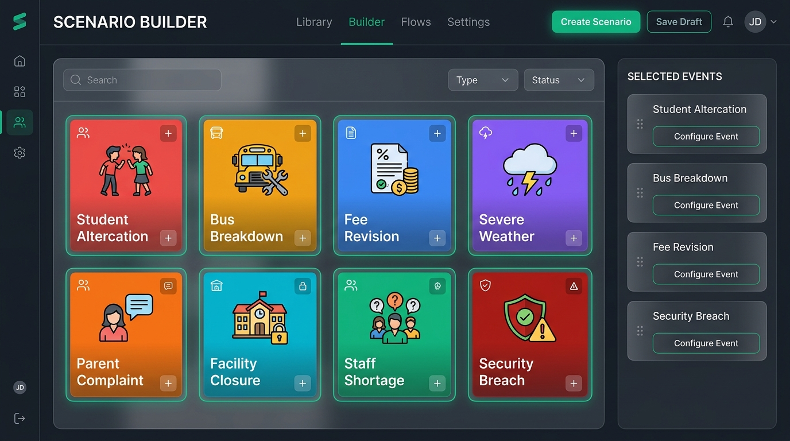
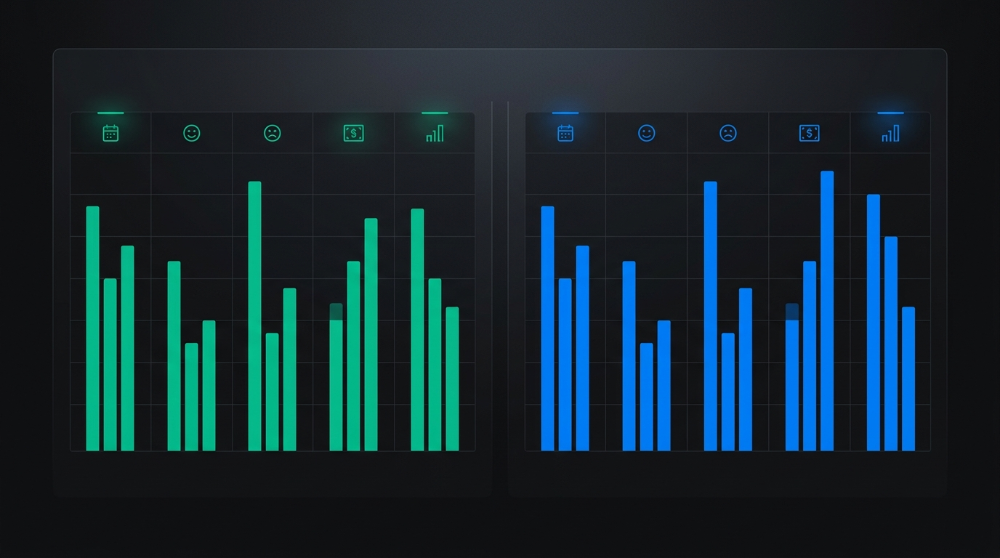

A synthetic 151-day simulation of a fictional Delhi school. Replay the baseline, inject what-if events, and compare outcomes in seconds.

Capabilities
From minute-by-minute playback to term-level time-lapse, SchoolTwin models attendance, mood, finance, transport, staffing, and incidents in one coherent system.
Open SchoolTwin and immediately inspect a pre-generated, validated 151-day synthetic term. Play/Pause, scrub the timeline, or run a full term time-lapse at 3 days per second.
3-step event simulator with visual presets. Zero mandatory typing for common what-if scenarios.
Branch from stable milestones at Days 0, 30, 60, 90, 120, and 150 without touching baseline history.
Mathematically verified deltas with categorical badges: Computed, Configured, Not modeled, Unavailable.
Describe a scenario in plain English. SchoolTwin parses it locally using Ollama or a zero-dependency fallback, previews the parsed events, and waits for your confirmation before simulating.
19 zone-level CCTV counters with zero individual tracking. Privacy by architectural design.
Bit-for-bit reproducible runs via keyed PRNG. Same seed, same checkpoint, same results every time.
Mood scores, friendship networks, distress signals, and attendance trajectories for every synthetic individual.
Scenario Builder
Select a preset event, pick a day, and watch the simulation diverge in real time. The term time-lapse plays automatically so you can see the ripple effects unfold.
Physical altercation involving 3 students, triggers nurse visit and staff intervention.
Route vehicle failure causing a lateness surge across affected students.
Tuition/transport fee adjustment with parental query surge and mood impact.
Phone confiscation incident triggering parent meeting and admin review.
Senior faculty departure causing lesson cover pressure and scheduling stress.
44°C alert suspending all outdoor activities and triggering health protocols.

Comparison Engine
Every metric is categorized with a transparent status badge. SchoolTwin never pretends to model something it doesn't.
| Metric Category | Included | Status |
|---|---|---|
| Attendance & Lateness | Avg Rate, Total Late Arrivals, Absence Volatility | Computed |
| Faculty & Operations | Teacher Absence Rate, Uncovered Lessons | Computed |
| Financial Position | Cash Balance, Revenue, Expenditure | Computed |
| Wellbeing & Sentiment | Avg Mood Score, High-Distress Share | Computed |
| Configured Levers | Extra Teachers, Fee Delta | Configured |
| Academic Outcomes | Board Exam Percentile, Subject Mastery | Phase 3 |
| Surveillance & Identity | Facial Recognition / Biometrics | Banned |

No paid API keys. No cloud dependencies. Fully local.
Python packages for the simulation engine.
pip install -r requirements.txt
Launches on port 8765 by default.
python scripts/serve.py
Replay baseline or create a scenario.
http://localhost:8765
Performance
90 days of school operations across 1,309 agents. Bit-for-bit reproducible. Run the benchmark yourself:
Synthetic Simulation Notice: All student identities, staff profiles, records, events, and camera counts are entirely synthetic. Outcomes are computational what-if scenarios, not predictions. SchoolTwin operates on aggregate zone occupancy counters only. Individual camera tracking and facial recognition are banned by architectural design.